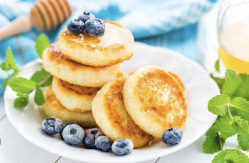
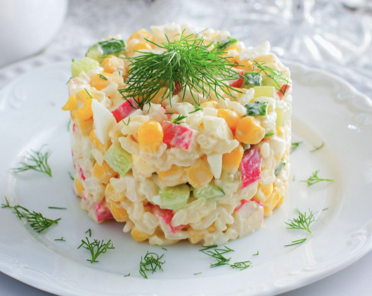
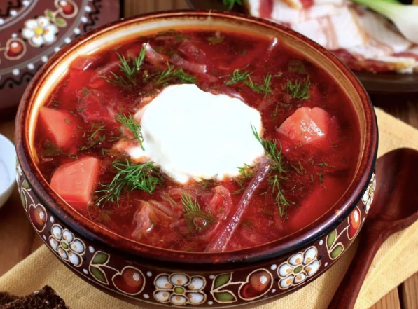

Смак Твоїх Перемог
Найкращі домашні рецепти, перевірені часом
До рецептів ↓Ласкаво просимо!
Ця книга рецептів створена для тих, хто любить готувати з душею. Тут ви знайдете не просто інструкції, а натхнення для щоденних обідів та святкових вечерь.
Популярне зараз

СИРНИКИ

КРАБОВИЙ САЛАТ
